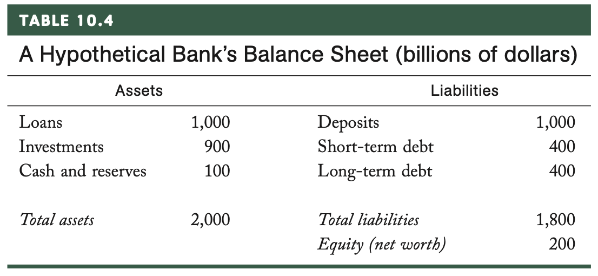

Econ 5120 Macroeconomic Theory
Chpt 10: GFC, Chpt 11: IS Curve
Introduction
High frequency data
GFC A First Look
IS Curve
High Freq: Employment Situtation
Equity and Bond Volatility
High Freq: US Equity Market
High Freq: US 60/40
Chapter 10: The Great Recession
Mortgage Backed Securities, incentive structure, sub-prime
Rising interest rates + leverage + poor risk management
Deleveraging in all asset classes
Banks needed bailing out because their balance sheets had more liabilities than assets
Sub-Prime Housing
New economy and low interest rates fueled asset bubbles
Securitization (CDOs) of mortgages created a perverse incentive structure
Global savings glut across the world
Sub-prime: lending to people with poor credit records or high debt-to-income ratios
Teaser rates, interest only, balloon payments, floating rate
Source: Macroeconomics, Jones, 2021
Rise in Interest Rate
Fed started raising interest rates from a low of 1% to 5%.
Exotic mortgage holders faced large movements in their monthly payments
High debt-to-income borrowers were insolvent / bankrupt
Source: Macroeconomics, Jones, 2021
Liquidity Risk: Inter-bank Lending
Remarkably most CDOs were held by financial institutions at high leverage
Ratings agencies had rated MBS higher than they should: AAA, AA, etc
Financial institutions where marking down assets daily - nobody knew who owned what.
Banks need to keep reserves - the amount changes daily
Loan at LIBOR rate (now SOFR)
CDS - ING
Source: Macroeconomics, Jones, 2021
Liquidity: Equity Markets
A deleveraging event started.
Bigger house payments less to invest
Banks started selling equity shares
No demand for equities a lot of supply
- Created a fire sale for all asset classes
Source: Macroeconomics, Jones, 2021
Employment
The vicious cycle started to take place
Non-farm employment peaked at 138m in 2007
By 2010 nearly 8.5 jobs had been lost
Source: Macroeconomics, Jones, 2021
Short-Run Output
- Short-run output fell more than 7 percent below potential output.
- Took nearly 10 years to reach potential output.
- “Lost Decade”
Source: Macroeconomics, Jones, 2021
U.S. Unemployment Duration
Unemployment went from 4.4% to 10% at the end of 2009
Six years to get back to 4% (duration)
Source: Macroeconomics, Jones, 2021
Great Recession
Source: Macroeconomics, Jones, 2021
Employment Loss Comparison
Source: Macroeconomics, Jones, 2021
Deflation
Source: Macroeconomics, Jones, 2021
The Rest of the World
Source: Macroeconomics, Jones, 2021
Balance Sheets

Assets / Liabilities
Reserve Requirement (10%)
Equity / Net Worth / Capital
- Total Assets - Total Liabilities
Capital Requirement (10%)
- Capital / Assets if < 0 insolvent
Leverage
Leverage Ratio: 1800/200 = 9
Bear Stearns had a leverage ratio of 35!
Source: Macroeconomics, Jones, 2021
Chapter 11: The IS Curve
\(\uparrow (\downarrow)\) interest rate \(\implies \downarrow (\uparrow)\) investment \(\implies \downarrow (\uparrow)\) short-run output (\(\tilde{Y_t}\))
Central bank sets interest rate (Fed funds rate)
Source: Macroeconomics, Jones, 2021
Economy of a Country
\(Y_t=C_t+I_t+G_t+EX_t-IM_t\)
\(\underbrace{Y_t+IM_t}_{resources\:available}=\underbrace{C_t+I_t+G_t+EX_t}_{total\:uses}\)
- Consumption
-
\(C_t=\bar{a}_c\bar{Y}_t\)
- Government
-
\(G_t=\bar{a}_g\bar{Y}_t\)
- Exports
-
\(EX_t=\bar{a}_{ex}\bar{Y}_t\)
- Imports
-
\(IM_t=\bar{a}_{im}\bar{Y}_t\)
- Investment
-
\(\frac{I_t}{\bar{Y_t}} = \bar{a}_i - \bar{b}(R_t-\bar{r})\)
Consumption
Permanent-Income (PI) hypothesis: consumption is based on avg income over time
Life-cycle (LC) model of consumption
LC/PI \(\implies\) set consumption equal to potential output not actual output
- \(C_t=\bar{a}_c\bar{Y_t}\)
Note: \(\bar{a}_g, \bar{a}_{ex}, \bar{a}_{im}\) are all assumed to be a constant fraction of potential output.
Investment Equation
\(\frac{I_t}{\bar{Y_t}} = \bar{a}_i - \bar{b}(R_t-\bar{r})\)
Long-run fraction of potential output that goes to investment: \(\bar{a}_i\)
\(\bar{b}(R_t-\bar{r})\) : Amount of investment depends on the gap between the real interest rate, \(R_t\) and the marginal product of capital, \(\bar{r}\).
\(R_t\) is the rate the firms can borrow
\(\bar{r}\) the additional output the firm can produce by investing in an additional unit of capital
Amount that firms invest depends the gap between real interest rate and MPC.
Investment Equation
\(\frac{I_t}{\bar{Y_t}} = \bar{a}_i - \bar{b}(R_t-\bar{r})\)
If MPC is low relative to real interest rate then firms are better off saving retained earnings
- For instance, investing in treasury bonds
If MPC is high relative to real interest rate then borrow and invest into capital leading to higher investment
Example: \(R_t\) = 10% and \(\bar{r}\)=15%
Firm borrows 100 units of capital
Yields an extra 15 units
Pay back 110 and profits 5 units
Investment Equation
\(\frac{I_t}{\bar{Y_t}} = \bar{a}_i - \bar{b}(R_t-\bar{r})\)
The parameter \(\bar{b}\) tells us how sensitive investment is to a change in \((R_t-\bar{r})\).
- A high value for \(\bar{b}\) means that small differences between the interest rate a MPC lead to big changes in investment.
In the long-run real interest rate must equal marginal product of capital: \(R_t=\bar{r}\).
- In the short-run: new capital takes time.
In the long-run \(R_t=\bar{r}\) and the investment share of potential output, \(\bar{Y}*t\), is* \(\bar{a}_i\).
Deriving the IS Curve
\(\tilde{Y_t} = \bar{a} - \bar{b}(R_t-\bar{r})\)
\(\frac{Y_t}{\bar{Y}_t} = \frac{C_t}{\bar{Y}_t}+\frac{I_t}{\bar{Y}_t}+\frac{G_t}{\bar{Y}_t}+\frac{EM_t}{\bar{Y}_t}-\frac{IM_t}{\bar{Y}_t}\)
\(\frac{Y_t}{\bar{Y}_t} = \bar{a}_c + \bar{a}_i -\bar{b}(R_t-\bar{r}) + \bar{a}_g + \bar{a}_{ex} - \bar{a}_{im}\)
Remember: \(\tilde{Y}_t \equiv \frac{Y_t-\bar{Y}_t}{\bar{Y}_t} = \frac{Y_t}{\bar{Y}_t}-1\)
\(\underbrace{\frac{Y_t}{\bar{Y}_t}-1}_{\tilde{Y}_t} = \underbrace{\bar{a}_c + \bar{a}_i + \bar{a}_g + \bar{a}_{ex} - \bar{a}_{im}-1}_{\bar{a}} -\bar{b}(R_t-\bar{r})\)
Why is it called the IS Curve?
\(Y = C + I + G + EX - IM\)
IS stands for investment equals savings.
Rearrange national identity equation: \(Y - C -G + (IM - EX) = I\)
Subtract tax revenues \(\underbrace{(Y - T - C)}_{private\:savings} + \underbrace{(T - G)}_{gov't\:savings} + \underbrace{(IM - EX)}_{foreign\:savings} = I\)
Using the IS Curve
\[ \tilde{Y_t} = \bar{a} - \bar{b}(R_t-\bar{r}) \]

Curve is drawn with no aggregate demand shocks (\(\bar{a}=0\))
Point A: Long-run equalibrium \((R_t = \bar{r})\)
- short-run output is zero
Point B: Increase in real rates, \(R_t\) , leads to a decrease in output \(\tilde{Y}'_t\).
Example: \(\bar{a} = 0\) , \(\bar{b}=2\) , \(R=\bar{r}= 5\%\), and \(R'=6\%\).
- When real interest rate rises 1% short-run output decreases by 2%.
Source: Macroeconomics, Jones, 2021
Aggregate Demand
\(\bar{a} \equiv \bar{a} + \bar{a}_i + \bar{a}_g + \bar{a}_{ex} - \bar{a}_{im} -1\)

An increase in aggregate demand, \(\bar{a}\) , shifts the IS curve out.
Example: Covid work from home spurs increase in \(\bar{a}_c\) .
Note: Shock to potential output leaves the IS Curve unchanged.
- Example: Destruction of capital caused by an earthquake effects long-run output, \(\bar{Y}_t\) , but does not enter the short-run equation, \(\tilde{Y}_t\).
Source: Macroeconomics, Jones, 2021
IS Curve Scenarios
A large recession hits Europe or Japan and foreigners reduce demand for US goods
The federal reserve lowers the real interest rate below the marginal product of capital
Consumers become pessimistic about the state of the economy and future productivity growth
Improvements in technology increase productivity leading to an increase in \(\bar{r}\)
Multiplier Effects
Suppose we modify our consumption equation, with \(\bar{x} \in [0,1]\):
\[ \frac{C_t}{\bar{Y}t}=\bar{a}_c+\bar{x}\tilde{Y}_t \] Derive IS Curve:
\[ \tilde{Y} = \underbrace{\frac{1}{1-\bar{x}}}_{multiplier} \times \underbrace{\left(\bar{a}-\bar{b}(R_t-\bar{r})\right)}_{original\:IS\:Curve} \]
IS Curve can involve feedback loop which can be either vicious or virtuous.
- A shock to the economy can multiply and create larger effects
Doesn’t change overall form of IS Curve, but coefficients larger/smaller
Investment Decisions
\(\frac{I_t}{\bar{Y_t}} = \bar{a}_i - \bar{b}(R_t-\bar{r})\)
Firms invest based on the difference between the real interest rate and marginal product of capital
Complications in calculating MPC
Corporate income taxes
Investment tax credits
Depreciation allowances
Further complication is the political volatility around all of the above every two to four years
Investment Decisions
\(\frac{I_t}{\bar{Y_t}} = \bar{a}_i - \bar{b}(R_t-\bar{r})\)
A firm’s cash flow: amount of money has on hand after paying expenses.
Firms with higher cash flow have lower financing costs.
Agency problems: Adverse selection and moral hazard make lenders more careful
Cash flow considerations are another justification for multiplier effects.
Government
Government on average accounts for about 20% of GDP
Infrastructure
Military
Education
FBI
FEMA
etc
Government Response to Shocks
Fiscal response to shocks can occur in order to restore demand and services back to potential output.
Build more highways
Hire more government staff
These responses increase \(\bar{a}_g\) and can prevent a shock induced recession.
They can also use transfer payments to stabilize the economy.
- Automatic stabilizers: unemployment insurance, increased spending on medicare.
Government Examples
American Recovery and Reinvestment Act of 2009
$797 fiscal stimulus bill
Spending on highways, education, research and development, plus grants to state governments
President Kennedy established an investment tax credit in 1961
- Offset taxes corporations paid for every dollar they invest
Economic Growth and Tax Relief Reconciliation Act of 2001
- Cut personal income tax rates by several percentage points
Fiscal Policy Considerations
Fiscal policy timing
Legislation must be drafted, passed and approved by President
By the time the policy is in place, the economy is farther down the road
Government faces budget constraints
Higher spending today leads must be paid for
\(\underbrace{G}_{uses}=\underbrace{T + \Delta B + \Delta M}_{sources\:of\:funds}\)
Effects of Fiscal Policy
An increase in government purchases financed by an increase in taxes - increases the IS Curve modestly in the short-run.
An increase financed by an unspecified change in taxes and/or spending at a future date increases the IS Curve $.50 for each $1 in spending.
These effects are larger in a recession because a large fraction of the economy is underutilized (~$.60).
Trade Balance
\(\bar{a} \equiv \bar{a} + \bar{a}_i + \bar{a}_g + \bar{a}_{ex} - \bar{a}_{im} -1\)
An increase in exports stimulates the US economy by shifting out the IS Curve
Americans divert their demand away from US goods and towards foreign goods the IS curve shifts in.
More on this is covered in future chapters.
Conclusions
\(\tilde{Y} = \bar{a}-\bar{b}(R_t-\bar{r})\)
\(\bar{a} \equiv \bar{a} + \bar{a}_i + \bar{a}_g + \bar{a}_{ex} - \bar{a}_{im} -1\)
Real interest rate has an inverse relationship with short-run output.
Multiplier effect increases the initial shock to \(\bar{a}\) .
Fiscal policy has the power to shift the IS curve, but is not always timely.

ECON 5120 | Scott Payseur